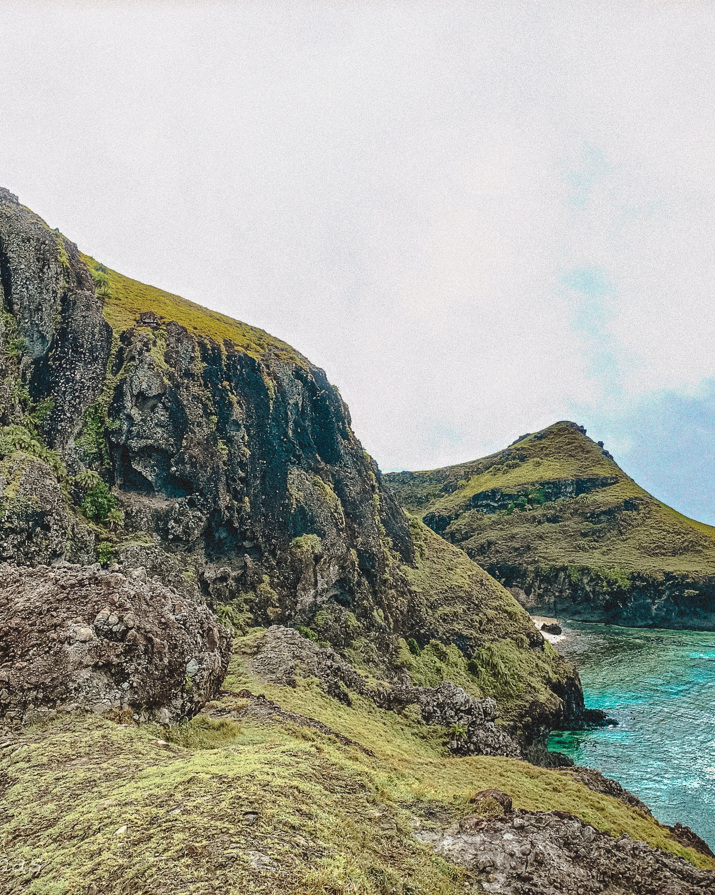

Natural
Sabtang Island is undisturbed and unspoiled. It has intermittent white sand beaches with steep mountains and deep canyons with small level areas sporadically found along the coastline. Itbayat Island is located north of Batan Island. Itbayat is shaped like a giant bowl. The island is surrounded by massive boulders and cliffs rising from 20 to 70 feet (6.1–21.3 metres) above sea level and has no shoreline. Batan Island is the most populated island of the province. It is composed of four municipalities: Basco, Ivana, Uyugan, and Mahatao. Basco is the center of commerce and the seat of the provincial government. Mount Iraya is a dormant volcano standing at 1,517 metres (4,977 feet) whose last eruption was recorded in 505 AD. Mountaineering, trekking, and trailblazing are recommended sports activities on the mountain. Di-atay Beach is a cove with multi-colored rocks and white sand ideal for picnics and beachcombing.

Man-made
Radar Tukon was a United States weather station on a hilltop. It offers a magnificent 360-degree view of Batan Island, the South China Sea, Mt. Iraya, Basco proper, boulder lined cliffs and the Pacific Ocean. Old Loran Station housed a US Coast Guard detachment for almost two decades and is about 25 kilometres (16 miles) from Basco. Ruins Of Songsong is a ghost barangay which is a cluster of roofless shells of old stone houses abandoned after a tidal wave that hit the island of Batan in the 1950s. San Jose Church in Ivana was built in 1814. It has a crenelated fortress-like campanile. The church fronts the Ivana Seaport and is 14 kilometres (8.7 miles) from Basco. Kanyuyan Beach & Port at Baluarte Bay in Basco is the port of call of the cargo ships bringing goods from Manila. San Carlos Borromeo Church and a convent at Mahatao are six kilometres (3.7 miles) from Basco. It was completed in 1789 and still retains its centuries-old features.
Historical
Radiwan Point at Ivana Seaport is where the Katipuneros landed on September 18, 1898. It is also the ferry station of the falowas plying the islands of Sabtang and Itbayat. Boat-shaped Stone Grave Markers, Chuhangin Burial Site, Ivuhos Island, Sabtang, Batanes. Chavulan Burial Jar Site, Ivuhos Island, Sabtang Island. Arrangement of Stone with Holes, Sumnanga, Sabtang. Columnar Stones, Post Holes, Stone Anchors, Itbud Idyang, Uyugan, Batanes. Arrangement of Stone Walls, Idyang Site, Basco, Batanes. Paso Stone Formation, Ivuhos Island, Sabtang, Batanes. Columnar Stone with Holes, Mahatao, Batanes
Intangible
In 2012, the National Commission for Culture and the Arts (NCCA) and the ICHCAP of UNESCO published Pinagmulan: Enumeration from the Philippine Inventory of Intangible Cultural Heritage. The first edition of the UNESCO-backed book included (1) Laji, (2) Kapayvanuvanuwa Fishing Ritual, (3) Kapangdeng Ritual, (4) Traditional Boats in Batanes, (5) Sinadumparan Ivatan House Types, (6) Ivatan Basketry, and (7) Ivatan (Salakot) Hat Weaving, signifying their great importance to Philippine intangible cultural heritage. The local government of Batanes, in cooperation with the NCCA, is given the right to nominate the 7 distinct elements into the UNESCO Intangible Cultural Heritage Lists.